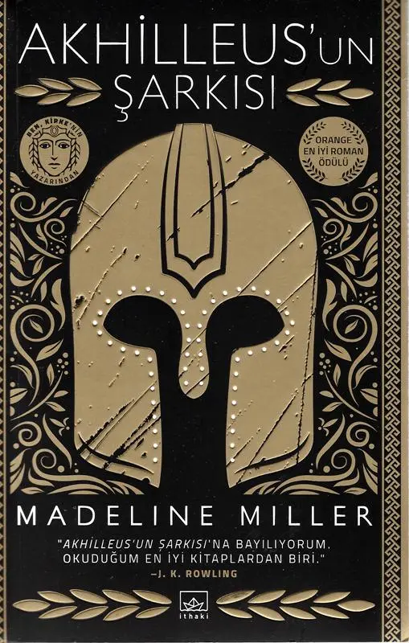

AŞKIN VE HÜZNÜN BİTMEYEN ACISI
Birazdan okuyacağınız inceleme spoiler içerir.
Akhilleus’un Şarkısı, bu dünyada var olmak için yazarı Madeline Miller’ı 10 sene uğraştıran bir roman. Çabaladığı 10 seneye değmiş mi? Kesinlikle değmiş. Bu kitabı okumadan önce az da olsa biraz mitoloji temelinizin olması kitaptan alacağınız hazzı en az iki kat arttıracaktır. Tavsiye vermem gerekirse; Homeros’un İlyada ve Odysseia kitaplarını veyahut en azından Say Yayınları’nın yayınladığı Mitoloji 101 kitabını mutlaka okumalısınız.
Olay örgümüz Antik Yunan’da geçiyor ve İlyada’nın farklı bir bakış açısıyla yeniden anlatımını bizlerle buluşturuyor. Bu sefer Patroklos’un gözünden olaylara şahit oluyoruz. Patroklos, Phthia’ya sürgün edilmiş bir prens. İşte tam da bu topraklarda hayatının aşkıyla tanışıyor, altın çocuk, geleceğin en iyi savaşçısı Akhilleus ile. Evet ikisi de erkek, bu sizi şaşırtmasın. Bir prensle bir savaşçının aşkını ve gelişen olayları okuyacaksınız. Ama Romeo ve Juliet okurken ne duygular hissettiyseniz, yine hissedeceksiniz. Hatta daha güçlü duyguları tecrübe edeceksiniz belki de. Bu iki karakterden birinden birine bir şey olmasın, aman biri ölmesin diye sağır kulaklara dualar edeceksiniz.
Madeline Miller’ın kalemine ayrıyeten bir şapka çıkarmak istiyorum, çünkü Homeros’un İlyada’sını şairane bir biçimde ve çok başarılı bir şekilde ele almış. Akhilleus’un savurduğu kılıç darbelerinin Truvalı askerlerde açtığı yaradan her an yüzünüze kan fışkıracakmış gibi hissediyorsunuz okurken. Ne yalan söyleyeyim, okurken kılıcımı kalkanımı kuşanıp Akhilleus ve Aias ile omuz omuza çarpışmaya gitmek istedim bir an için. İşte bu yüzden bu kitap başarılı bir kitap! Çevirmen Seda Çıngay’a da buradan teşekkürlerimi sunuyorum. Şimdi gelgelelim sitemime…
Ben şahsen okurken zevk aldım. Son olarak da sadece kitabı okuyanların anlayacağı bir cümle ile sonlandırmak istiyorum incelememi; Öldüğümde küllerimi bu kitap ile yakın. :)
‘’Adamların en iyisi, Myrmidon’ların en iyisi’’ Patroklos’a selam olsun!